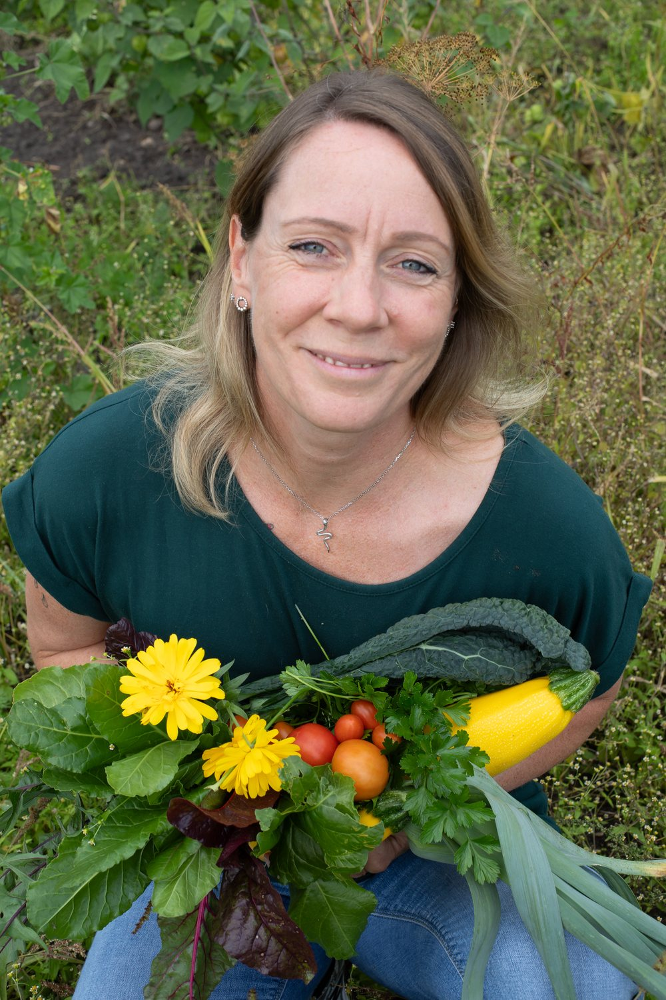
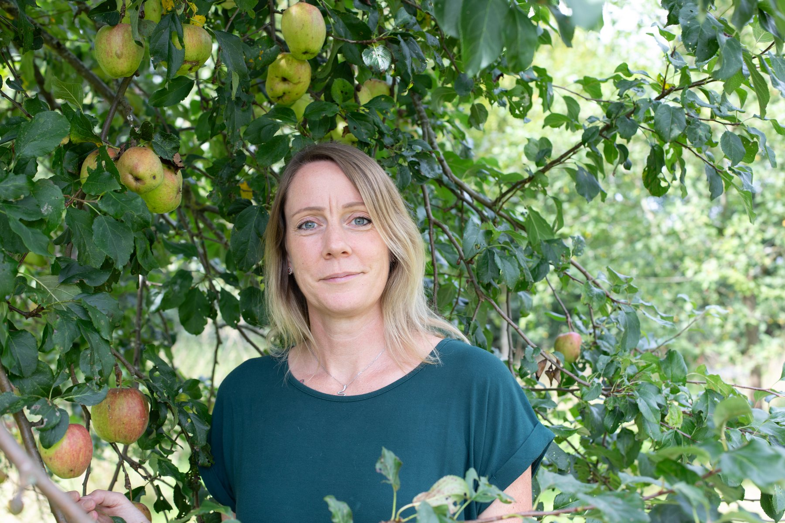

Dein Weg zu einer Ernährung, die bleibt! In 42 Tagen begleite ich dich Schritt für Schritt bei deiner Ernährungsumstellung – alltagstauglich, ohne Verbote, mit spürbarer Wirkung.
Nicht Diät, sondern Neustart!
Erstgespräch buchenPrivatleistung · Keine Abrechnung über Krankenkasse oder Rezept.

Im stressigen Alltag gehen die eigene Gesundheit und eine gute Versorgung des Körpers schnell unter. Zwischen Job, Familie und Terminen bleibt oft wenig Zeit, bewusst auf die Ernährung zu achten.
Genau hier setzt dieses Programm an: In den nächsten 42 Tagen begleite ich dich Schritt für Schritt bei deiner Ernährungsumstellung. Gemeinsam konzentrieren wir uns auf drei Ziele:
Am Ende der 42 Tage hast du nicht nur neue Gewohnheiten entwickelt, sondern auch ein besseres Gespür für deinen Körper. Und oft verabschieden sich dabei ganz nebenbei auch ein paar Kilos ;)
Erstgespräch buchenZu viel Zucker, Fastfood und Fertigprodukte, dazu Stress, wenig Bewegung, Rauchen und Alkohol: Unser Alltag fordert den Körper oft mehr, als uns bewusst ist. Die möglichen Folgen:
Eine ballaststoffarme, zuckerreiche Ernährung kann die Darmflora stören. Da ein Großteil unserer Immunzellen im Darm sitzt, wirkt sich das auch auf das Immunsystem aus.
Dauerhafter Stress und ungünstige Ernährung können Entzündungsprozesse im Körper fördern.
Blutzuckerschwankungen, Schlafmangel und Stress machen müde und unkonzentriert.
Langfristig steigt das Risiko für Übergewicht, Typ-2-Diabetes, Bluthochdruck und Herz-Kreislauf-Erkrankungen, uvm.
Die gute Nachricht: Vieles davon hast du selbst in der Hand. Und genau hier setzt dein Neustart an!
Durch frische, unverarbeitete Lebensmittel statt Fertigprodukten mit Zusatzstoffen, Zucker und ungünstigen Fetten.
Mit vielen Ballaststoffen, die deine „guten“ Darmbakterien füttern und eine gesunde Darmflora fördern.
Durch Ballaststoffe, ausreichend Flüssigkeit und regelmäßige Mahlzeiten.
Durch nährstoffreiche Lebensmittel und hochwertige Vitalstoffe.
Mit Nährstoffen wie Vitamin C, Vitamin D und Zink, die zu einer normalen Funktion des Immunsystems beitragen.
Mit viel Gemüse, Kräutern und frischen Zutaten.
Mehr Energie, mehr Wohlbefinden und ein besseres Gespür dafür, was dir guttut.
Viele verlieren dabei auch das ein oder andere Kilo.
Ergebnisse, keine Versprechen

Ich bin zertifizierte Ernährungsberaterin aus Hamburg. Mein Ansatz: keine Verbote, keine Universalpläne. Dein Alltag, deine Vorlieben und deine Geschichte fließen in jede Empfehlung ein.
Ich weiß auch aus eigener Erfahrung, wie es sich anfühlt, wenn der eigene Körper sich plötzlich fremd anfühlt. Mit einer Hashimoto-Diagnose und frühen Wechseljahren habe ich selbst erlebt, wie verunsichernd hormonelle Veränderungen sein können. Meine eigenen 42 Tage haben damals vieles verändert – hier erzähle ich davon.
Ob in Hamburg oder online: Ich begleite dich so lange, bis du sicher auf eigenen Beinen stehst.
Nein. Es geht nicht ums Hungern oder Kalorienzählen, sondern darum, deinen Körper gut zu versorgen und Gewohnheiten aufzubauen, die auch nach den 42 Tagen bleiben. Nicht Diät, sondern Neustart!
Sechs Wochen sind lang genug, damit sich neue Routinen festigen und du spürst, was sich in deinem Körper verändert, und kurz genug, um gut durchzuhalten.
Die Basis ist immer deine Ernährung mit frischen, nährstoffreichen Lebensmitteln. Ergänzend empfehle ich dir hochwertige Vitalstoffe, abgestimmt auf deine Situation und in sinnvollen Mengen.
Beides ist möglich: Gruppen-Kurse starten im Januar, April und September und enthalten ergänzende Workout-Videos. Eine One-to-One-Begleitung kannst du das ganze Jahr über beginnen.
Meine Leistungen sind Privatleistungen. Eine Abrechnung über die gesetzliche oder private Krankenversicherung sowie über Rezept ist nicht möglich. Du erhältst von mir eine Rechnung, die du direkt begleichst.